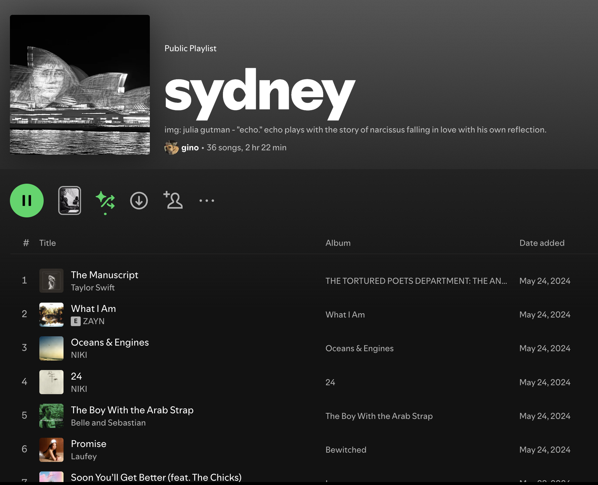

One of my most favorite seasons will always be the period from Autumn to Winter. Nights are longer, it’s getting cold, and I get to wear my favorite clothes.
During this season is my most favorite festival in Sydney - Vivid. Vivid Sydney is an annual celebration of artworks which uses lights, projections, and many other unique exhibitions all around the Sydney at night. The city is lit up with lasers which penetrate through the sky. The Opera House sails are lit up with art projections (I even had a Spotify playlist dedicated to this art). All around the city, are various exhibitions of lights and sound - the city literally becomes a colorful contemporary museum.
As I look towards the start of the Vivid Festival tomorrow, I can’t help but reflect on my previous two Vivid the experiences I had then.

Almost exactly one year ago, I made this playlist now titled as “sydney” (I name my playlists to places which remind me or something - in this case, “sydney” where I first fell in love truly.) This playlist is meant to be introspective. It’s meant to help me make sense of my feelings during different stages of my life. Taylor Swift’s “The Prophecy,” for instance, was added during a dramatic shift in my life: when I wanted to start loving truly instead of waiting for it to come. It was August 16, 2024 and the lines: “Please I’ve been on my knees. Change the prophecy. Don’t want money, just someone who wants my company.” really touched me to my core back then.
Nevertheless, the image in the playlist was taken during Vivid Sydney last year when the Opera House sails was lit-up by Julia Gutman’s artwork. It’s made from a different recycled fabrics. This was the story behind this lighting projection:
In a fantasia of fabrics, we meet our protagonist. A girl with a striped t-shirt, hair made from her mother’s scarf and a face sewn from an old hessian sack. Lured by her reflection, she’s drawn into a proverbial pool. Finding herself transported into the unfamiliar, she must navigate rocky subsoils of satin and dangerous rivers of denim.
Through dance, music, and puppetry, Echo tells a story of wonder, vulnerability, and strength. It weaves together the imagined and the real, the public and the private, the dark and the light. Echo is a call to look inwards and meet our shadows head on. Its beauty and strangeness will reverberate in your mind long after the lights are switched off and the fabric has fallen away.
Additionally, I took a photo of the artwork with a long exposure shot in a moving ferry. This gave a rather blurry final image. I really liked this detail when taking the photo because it sort of gives a sense of anxiety or uncertainty - that everything is about to sink at anytime. It’s vulnerable.
I loved this photo and made a playlist out of it. It’s arguably my most favorite playlist because it’s me. A journey through music and poetry - and what I’ve been feeling the past year.
During the time when I had “The Prophecy” on repeat, it was a time when I was craving to be loved.
For years, there a lots of times when I thought: “Oh, maybe this is it.” But people eventually leave.
“Thought I caught lightning in a bottle
Oh, but it’s gone again.”
I’m not just talking about love, but people in-general. Friends, love interest, business partners, and others.
Do you ever feel like you have those moments in your life where you thought your life is finally going to change? I’ve had a lot of those and I really yearned for it.
Years of this happening, I’ve just come to accept that it’s just my curse. My stars’ curse, my familial curse, the curse of being born a bastard son, the curse of being an only child - to be alone forever.
“I got cursed like Eve got bitten
Oh, was it punishment?”
I’ve told people this before: but I really felt that I didn’t deserve anything because life wouldn’t just give me anything.
Yet, I never lost hope. Maybe someday someone will be there for me. Because that’s what I only ever wanted: not money, but companionship. I was resilient because that’s how I survived.
“I guess a lesser woman would’ve lost hope.”
Because fuck money, fuck being entitled to live in a first-world country. I want connection. I want a purpose. I want to be affirmed that my cursed existence isn’t just for nothing. I know, deep-down that I can…
“Change the prophecy.”
But one can only wait for so long.
“Even statues crumble if they’re made to wait
I’m so afraid I sealed my fate
No signs of soulmates
I’m just a paperweight in shades of greige
Spending my last coins so someone will tell me it’ll be okay.
As another Vivid is about to start I reflected on my journey from since I listened to the song religiously.
Maybe my fate is sealed after all - I’m just incapable of to get what I’m looking for. Maybe I have too much pride, maybe I’m too selfish to realize it, or maybe I just fear being abandoned. I just fail people somehow and they will just leave - no one will ever stay. Nevertheless, it’s my curse to carry.
25-years and it’s just the same cycle all over again. Quite frankly, I’m tired. Maybe I’m just much like my mom; cursed to have inconsistent friends, cursed to have unstable relationships, and cursed to not be loved enough - including by me.
I really don’t want to regress.
But I am, sadly.
I have to continue surviving.
Even if it means doing things that isn't who I am.
Here’s to another year of whatever this playlist will evolve into.